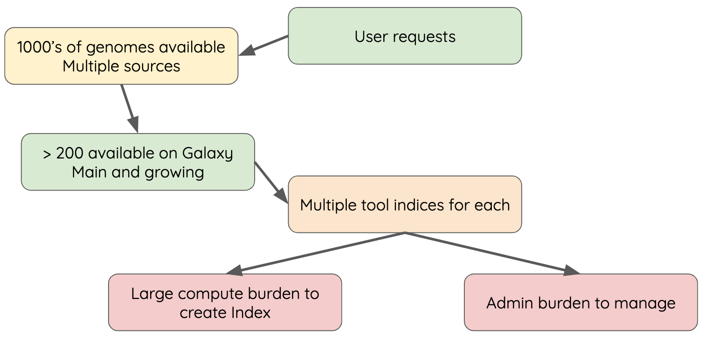
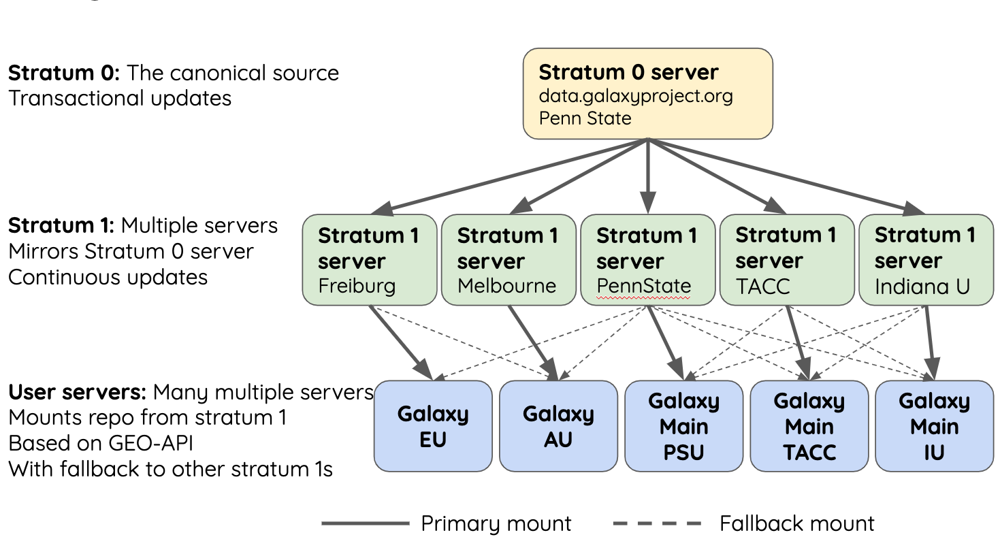

Reference Data with CVMFS
Contributors
 Daniel Blankenberg
Daniel Blankenberg  Simon Gladman
Simon Gladman  Helena Rasche
Helena Rasche
Objectives
Have an understanding of what CVMFS is and how it works
Install and configure the CVMFS client on a linux machine and mount the Galaxy reference data repository
Configure your Galaxy to use these reference genomes and indices
Use an ansible playbook for all of the above.
last_modification Last modification: Apr 6, 2021
Built in Data

Speaker Notes
- Many tools need reference data
- E.g. this BWA-MEM tool requires a reference genome
- But where do you get this data?
- And how do tools know where to find it?
Data, what data?
.large[
- Some genomes are large! Human, Mouse, Coral
- Some tools require indices of the genomes.
- The indices take a long time to build!
- Better to pre-build the indices. ]
Speaker Notes
- Much of this reference data requires calculation to generate it
- For example, building dataset indexes
- It is better to build them beforehand, so Galaxy has a concept of reference data
Data schematics in Galaxy

Speaker Notes
- Here is a more conrete example
- A reference dataset is required as input
- A tool (e.g. bwa) is used to build the index
- The outputs are registered with Galaxy’s data registry in a loc file
- The tool data table xml file has a listing of all of the loc files
- When a user runs the BWA tool, Galaxy knows where to find this reference data
Index Generation with Data Manager
- Allows for the creation of built-in (reference) data
- underlying data
- data tables
- *.loc files
- Specialized Galaxy tools that can only be accessed by an admin
- Defined locally or installed from ToolShed
Speaker Notes
- Data managers are special tools in Galaxy
- They create the reference data
- And update the loc files
“loc” files - Short for location!
#
#<unique_build_id> <dbkey> <display_name> <file_path>
#
bosTau7 bosTau7 Cow (bosTau7) /genomes/bosTau7/bwa_mem_index/bosTau7/bosTau7.fa
ce10 ce10 C. elegans (ce10) /genomes/ce10/bwa_mem_index/ce10/ce10.fa
danRer7 danRer7 Zebrafish (danRer7) /genomes/danRer7/bwa_mem_index/danRer7/danRer7.fa
dm3 dm3 D. melanogaster Apr. 2006 (BDGP R5/dm3) (dm3) /genomes/dm3/bwa_mem_index/dm3/dm3.fa
hg19 hg19 Human (hg19) /genomes/hg19/bwa_mem_index/hg19/hg19.fa
hg38 hg38 Human (hg38) /genomes/hg38/bwa_mem_index/hg38/hg38.fa
mm10 mm10 Mouse (mm10) /genomes/mm10/bwa_mem_index/mm10/mm10.fa
Speaker Notes
- Here is an example loc file
- They list all of the indexes of a specific type
- Some of these indexes will be tool specific like this one, and some will be more general like a list of genomes
- This file is updated by the data manager.
Where are the data tables?
(Usually located in galaxy/config/tool_data_table_conf.xml)
<tables>
<!-- Locations of indexes in the BWA mapper format -->
<table name="bwa_mem_indexes" comment_char="#" allow_duplicate_entries="False">
<columns>value, dbkey, name, path</columns>
<file path="tool-data/bwa_index.loc" />
</table>
</tables>
Speaker Notes
- The tool data table conf file lists table names, and their associated loc file
- Additionally it defines the meaning of each column in the loc file
Using reference data in a tool
bwa.xml
<param name="ref_file" type="select" label="Using reference genome" help="Select genome from the list">
<options from_data_table="bwa_mem_indexes">
<filter type="sort_by" column="2" />
<validator type="no_options" message="No indexes are available" />
</options>
<validator type="no_options" message="A built-in reference genome is not available for the build associated with the selected input file"/>
</param>
Speaker Notes
- When a tool wants to use the data from those tables, it needs to declare which tables it wants to access (see previous slide)
- A select type parameter is created for the user’s selections
- The tool knows that the options should come from a BWA-MEM indexes loc file
- These reference datasets are sorted by column 2, the name
- An some validators ensure a helpful message is shown if no data is available
Some Problems!
- Super complex, right?
- Time consuming!
- ~30 minutes work just to add a new genome to 1 tool!
- Administrator needs to know:
- how to index every tool
- expected format of the reference data
- format of the .loc file
- Some parts solved by Data Managers
- But there’s an easier way!
Speaker Notes
- This was a lot of information
- And very genomics specific in some places
- A lot of work to create and update the reference data
- But there is a better way!
There’s a lot of reference data
.large[ (and it’s hard to keep up with) ] 
Speaker Notes
- Imagine going through this process every time a user request comes in
- It would be unpleasant
CernVM-FS to the rescue
- Needed a method of sharing reference data across country efficiently
- CVMFS is an efficient method for read only data sharing between systems
- Originally designed for distributed software installation at Cern
- Turns out it’s really useful for read only data sets as well
- HTTP-based, firewall friendly
- All nodes of Galaxy Main get their reference genomes and indices from CVMFS
- Shared via mirroring and caching across the country
- It’s also really useful to share data globally
- The usegalaxy.* initiative has taken full advantage of this.
Speaker Notes
- CVMFS and the IDC solves these issues
- CVMFS provides a global repository of reference data
- Originally built by CERN for sharing software, we use it for data
- It’s an HTTP based protocol and very firewall friendly
- All of the usegalaxy.* servers host a CVMFS repository
IDC
- Group of admins working on the CVMFS data repository
- Wish to automate the management of data and generation of new indicies
- Come join us: github.com/galaxyproject/idc
Speaker Notes
- The IDC is the other half of the puzzle
- CVMFS provides the storage, and the IDC provides the data
- Join us on github if you are interested
CVMFS Global Structure
.widen_image[  ]
Speaker Notes
- CVMFS has a hierarchical structure
- At the top is the stratum 0 server, the original copy of the datasets
- This is replicated to the read-only stratum 1 servers
- Anyone can connect to these stratum 1 servers
- And whenever connections fail, CVMFS will fail over to another mirror
- The mirror selection process is based on connection round trip times
- As a result, the nearest mirror is usually selected.
.widen_image[
 ]
]
Speaker Notes
- There are CVMFS servers across the entire world
- The primary mirrors are run by Galaxy project, Galaxy Europe, and Galaxy Australia
- If one of these mirrors fails, you will still be able to use the reference data
Thank you!
This material is the result of a collaborative work. Thanks to the Galaxy Training Network and all the contributors! This material is licensed under the Creative Commons Attribution 4.0 International License.
This material is licensed under the Creative Commons Attribution 4.0 International License.